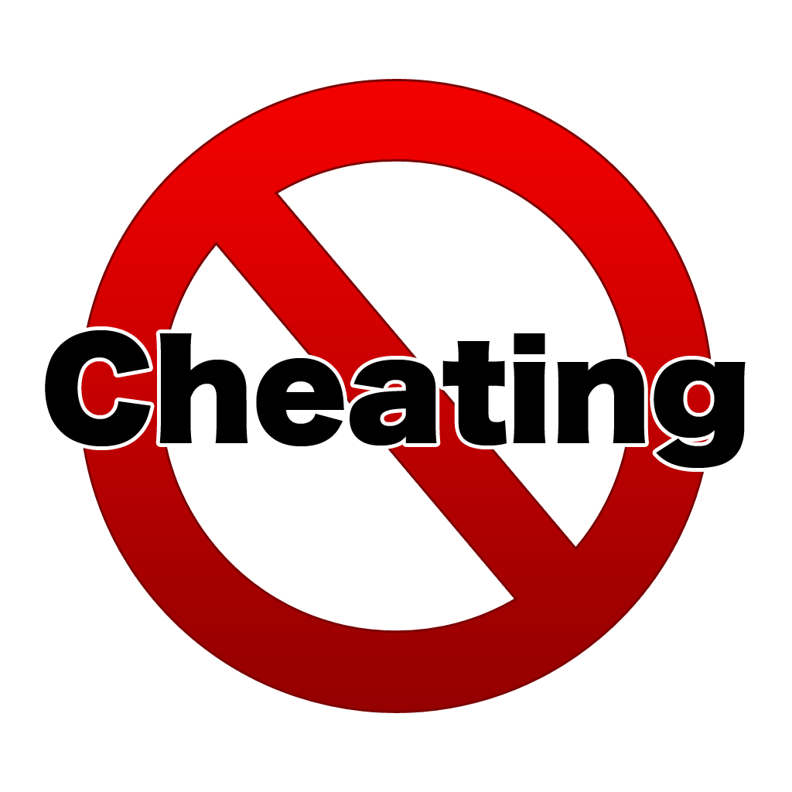
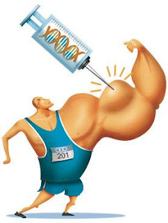

Cheating in sports
- Home
- Types of sports
- History of sports
- Benefits of sports
- Negative aspects of sports
- Balance between physical and mental activities
Cheating
Key principles of sport include that the result should not be predetermined, and that both sides should have equal opportunity to win. Rules are in place to ensure fair play, but participants can break these rules in order to gain advantage.
Participants may cheat in order to unfairly increase their chance of winning, or in order to achieve other advantages such as financial gains. The widespread existence of gambling on the results of sports fixtures creates a motivation for match fixing, where a participant or participants deliberately work to ensure a given outcome rather than simply playing to win.
Doping and drugs
Historically speaking, the origins of doping in sports go back to the very creation of sport itself. From ancient usage of substances in chariot racing to more recent controversies in baseball and cycling, popular views among athletes have varied widely from country to country over the years. The general trend among authorities and sporting organizations over the past several decades has been to strictly regulate the use of drugs in sport. The reasons for the ban are mainly the health risks of performance-enhancing drugs, the equality of opportunity for athletes, and the exemplary effect of drug-free sport for the public. Anti-doping authorities state that using performance-enhancing drugs goes against the "spirit of sport".
The competitive nature of sport encourages some participants to attempt to enhance their performance through the use of medicines, or through other means such as increasing the volume of blood in their bodies through artificial means.
All sports recognised by the IOC or SportAccord are required to implement a testing programme, looking for a list of banned drugs, with suspensions or bans being placed on participants who test positive for banned substances.